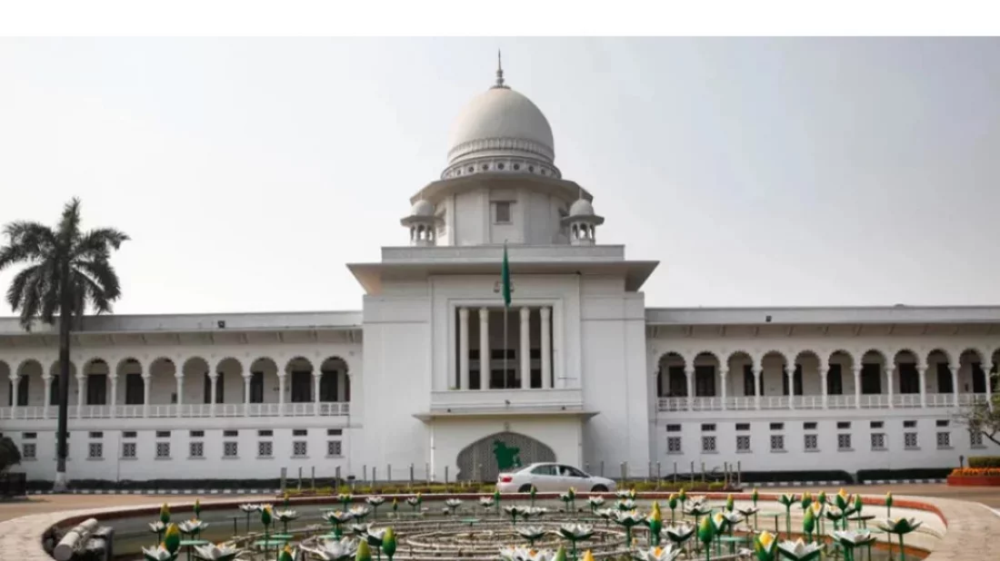

Writ filed to stay HC order cancelling freedom fighter quota in govt jobs
High Court reinstated the quota on Wednesday
Circular issued to abolish the quota system in 2018

File image of High Court. Photo: Dhaka Tribune
The government has filed a writ petition with the High Court seeking a stay on its verdict that reinstated first and second-class freedom fighter quota in government jobs.
Assistant Attorney General Muhammad Saiful Alam filed the petition with the concerned branch of the Appellate Division on Sunday.
On Wednesday, the High Court declared the decision to cancel the quota system, including the first and second-class freedom fighter quota in government jobs, invalid.
The High Court bench of Justice KM Kamrul Quader and Justice Khizir Hayat announced the verdict.
On October 4, 2018, the Ministry of Public Administration issued a circular to implement the cabinet's decision to abolish the existing quota system for direct recruitment to first and second-class posts in government jobs.
The Ministry of Public Administration issued the circular a day after the decision of the Cabinet to cancel the quota.